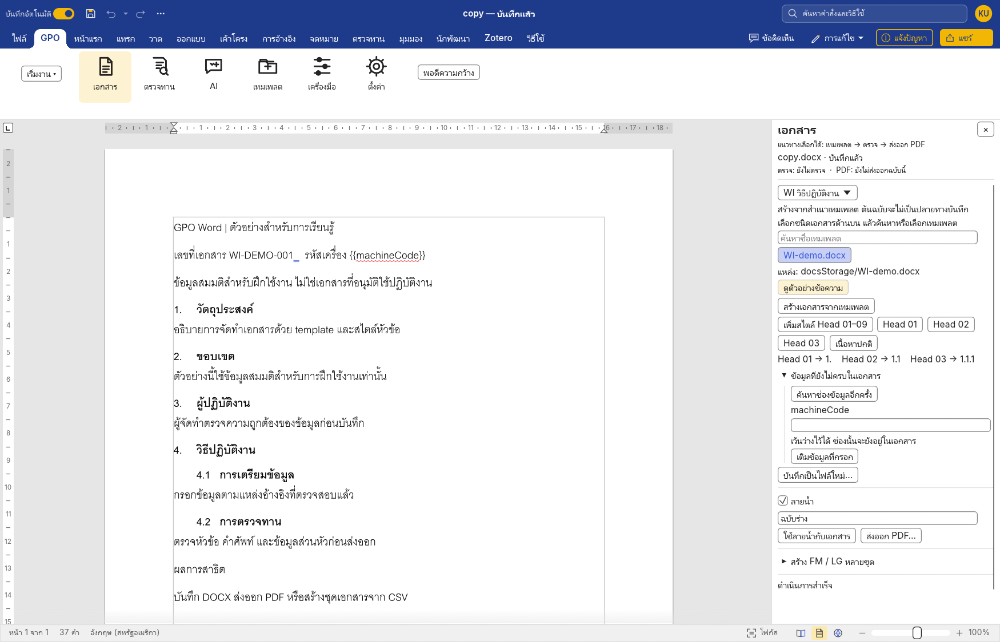
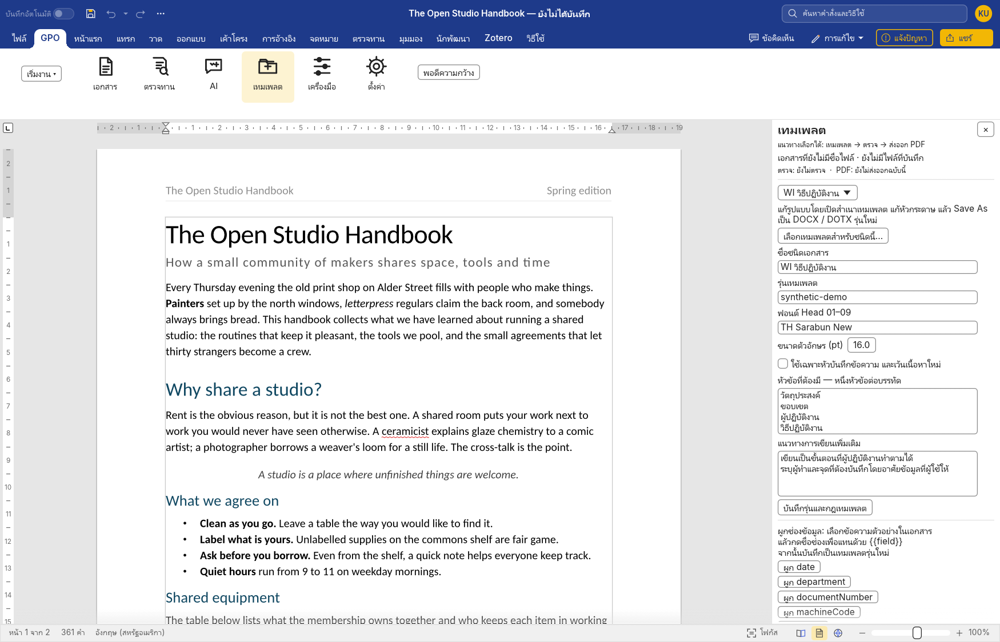
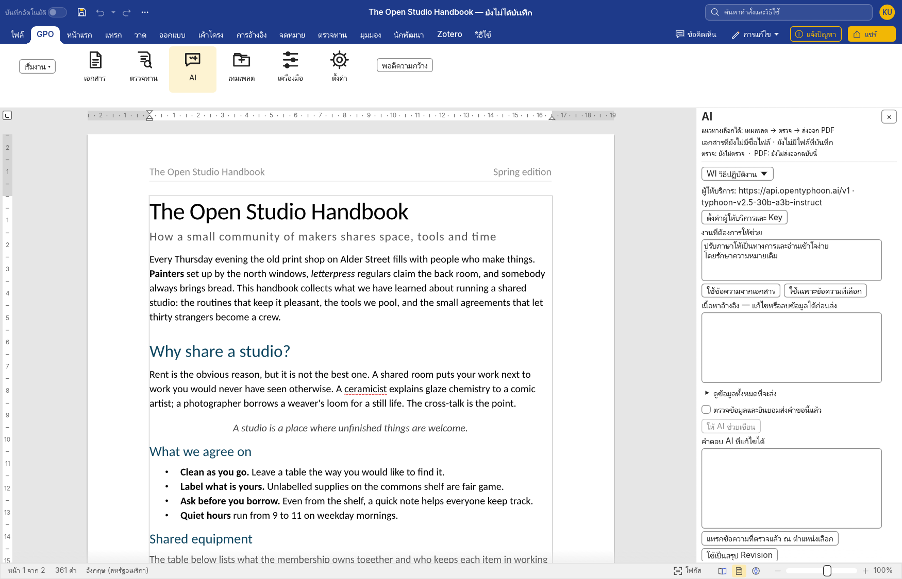
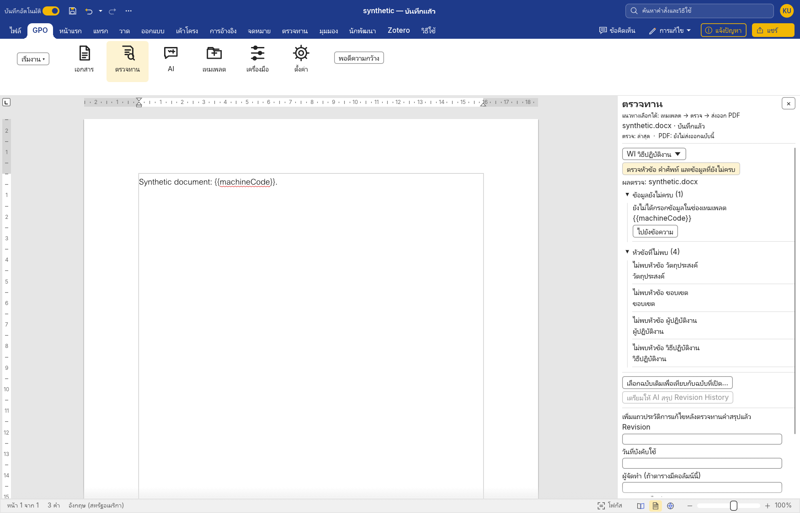
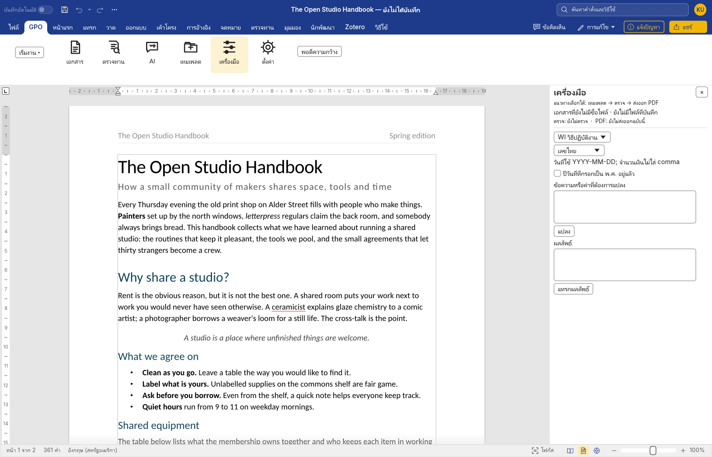

คู่มือใช้งาน GPO Word
คู่มือนี้อธิบายการสร้างเอกสารจาก template การใช้หัวข้ออัตโนมัติ การตรวจทาน และการส่งออกไฟล์สำหรับผู้ใช้ Windows ส่วนเอกสารสำหรับนักพัฒนาใน repository ใช้ภาษาอังกฤษ
ภาพในคู่มือนี้ถ่ายจากแอป Windows โดยใช้เอกสารสมมติ ผลตรวจและขั้นตอนที่ยังไม่ได้ทดสอบอยู่ใน VALIDATION.md
1. เตรียมโฟลเดอร์และเปิดโปรแกรม
ชุดที่เปิดใช้ได้ต้องมี GPOWord.exe และโฟลเดอร์ docsStorage ซึ่งมี catalog.json และ pack.json อยู่ข้างใน ไฟล์ ZIP ที่มีเฉพาะซอร์สโค้ดจะยังเปิดเป็นโปรแกรมไม่ได้
การตั้งค่า GPO และ Key ที่เข้ารหัสเก็บใน data ส่วนการตั้งค่าตัวแก้ไขและไฟล์กู้คืนเก็บใน data/editor ของชุด portable การทำแพ็กแจกใหม่จะไม่รวมข้อมูลผู้ใช้เหล่านี้
แตก ZIP ทั้งชุดก่อน แล้วดับเบิลคลิก GPOWord.exe จากนั้นเลือกแท็บ GPO บนแถบด้านบน แล้วกด เอกสาร, ตรวจทาน, AI, เทมเพลต, เครื่องมือ หรือ ตั้งค่า เพื่อเปิดแผงงานด้านขวา หากปิดแผงไปแล้ว ให้กดปุ่มเดิมบนแถบ GPO เพื่อเปิดอีกครั้ง ถ้าหน้ากระดาษแสดงไม่ครบ ให้กด พอดีความกว้าง บนแถบ GPO หรือปิดแผงเพื่อเพิ่มพื้นที่เขียน ส่วนแผงที่มีรายการยาวสามารถเลื่อนลงได้

หากโปรแกรมยังไม่พบ template ให้เข้า ตั้งค่า → โฟลเดอร์ docsStorage → เลือกโฟลเดอร์… แล้วเลือกโฟลเดอร์ที่มี catalog โดยตรง ไม่ใช่โฟลเดอร์แม่
เอกสารต้นฉบับที่ใช้พัฒนาระบบเก็บแยกอยู่ใน gpoDocs\docsStorage ชุดแจกจะรวมเฉพาะ template ที่คัดเลือกไว้ ส่วนบันทึกข้อความฉบับเต็มและข้อมูลผู้ใช้เดิมไม่รวมในชุดแจก
2. สร้าง WI, QP, FM หรือ SP
- เปิดหน้าต่าง GPO Word แล้วเลือกชนิดเอกสาร เช่น WI
- ไปที่แผง เอกสาร เลือกชนิดเอกสาร ค้นหาชื่อ และเลือก template ให้ตรงกับงาน กด ดูตัวอย่างข้อความ เพื่อตรวจเนื้อหาเบื้องต้น แล้วกด ซ่อนตัวอย่างข้อความ เมื่อดูเสร็จ ภาพจัดหน้าอาจต่างจากข้อความตัวอย่าง
- กด สร้างเอกสารจากเทมเพลต
- ตรวจชื่อเอกสาร รหัส Revision หน่วยงาน และข้อมูลส่วนหัว
- กด บันทึกเป็นไฟล์ใหม่… แล้วตั้งชื่อที่ยังไม่มีอยู่ ระบบจะไม่เขียนทับไฟล์เดิม
การสร้างเอกสารจาก template จะสร้างสำเนาสำหรับแก้ไข ไฟล์ต้นฉบับไม่ควรเป็นปลายทางบันทึกของเอกสารใหม่ ชื่อเอกสารและข้อมูลตัวอย่างใน template ต้องตรวจและเปลี่ยนให้ตรงกับงานทุกครั้ง
สำหรับ Logbook ให้เลือกแบบหน้าปกก่อน แล้วเพิ่มตารางในหน้าถัดไปตามลักษณะการบันทึก โดยใช้คำสั่ง Insert → Table ของตัวแก้ไขหลัก
ชุดต้นแบบที่ได้รับยังไม่มีแบบ OJT และ TOR โดยเฉพาะ หากจะใช้งานสองประเภทนี้ ต้องเลือก template ที่หน่วยงานใช้อยู่เพิ่มเติม ไม่ใช้แบบข้อสอบแทน OJT โดยอัตโนมัติ
3. ใช้ Head 01, Head 02 และเลขหัวข้อ
วางเคอร์เซอร์ในย่อหน้าที่เป็นหัวข้อ แล้วเลือก เพิ่มสไตล์ Head 01–09 เพื่อให้เอกสารมีชุดสไตล์ จากนั้นกดระดับหัวข้อที่ต้องการ
| สไตล์ | ตัวอย่างเลข | ใช้กับ |
|---|---|---|
| Head 01 | 1. | หัวข้อหลัก |
| Head 02 | 1.1 | หัวข้อย่อยระดับแรก |
| Head 03 | 1.1.1 | หัวข้อย่อยระดับถัดไป |
| เนื้อหาปกติ | ไม่มีเลขหัวข้อ | ย่อหน้าคำอธิบาย |
เลือกทั้งย่อหน้าหรือวางเคอร์เซอร์ในย่อหน้านั้นก่อนเปลี่ยนสไตล์ หลีกเลี่ยงการพิมพ์เลขหัวข้อนำหน้าด้วยมือ เพราะเลขที่พิมพ์เองจะไม่สัมพันธ์กับการเพิ่ม ลบ หรือย้ายหัวข้อ
หลังแก้ไขโครงสร้าง ให้ตรวจเลขบนหน้าและในแถบนำทาง แล้วบันทึก ปิด และเปิดไฟล์ใหม่เพื่อตรวจซ้ำ โดยเฉพาะเอกสารที่นำเข้าจาก DOC รุ่นเก่า
4. เติมข้อมูลซ้ำด้วยช่องข้อมูล
ช่องข้อมูลใช้รูปแบบ {{ชื่อช่อง}} เช่น {{machineCode}} หรือ {{documentNumber}} เมื่อตั้งค่าครั้งแรกแล้ว ผู้ใช้สามารถเติมข้อมูลโดยไม่ต้องค้นหาและแก้ข้อความทุกตำแหน่งด้วยตนเอง
การผูกช่องข้อมูล:
- เปิดสำเนา template ที่ต้องการแก้
- เลือกข้อความตัวอย่างที่ต้องการแทน เช่น รหัสเครื่องจักร
- ไปที่ เทมเพลต แล้วกด ผูก machineCode หรือชื่อช่องที่ตรงกับข้อมูล
- ตรวจว่าข้อความเปลี่ยนเป็น
{{machineCode}} - ใช้ Save As บันทึกเป็น template รุ่นใหม่
เมื่อสร้างเอกสารจริง ให้กรอกค่าของช่องในแผง เอกสาร แล้วกด เติมข้อมูลที่กรอก ตรวจส่วนหัว ตาราง และท้ายกระดาษว่าถูกเติมครบก่อนบันทึก ช่องที่เว้นว่างจะยังคง placeholder ไว้ หากเตรียมสร้างหลายชุด ให้เติมเฉพาะข้อมูลส่วนกลางและเว้น machineCode ไว้สำหรับ CSV
5. เปลี่ยน format โดยไม่แก้โค้ด

การเปลี่ยนรูปแบบมีสองส่วน ซึ่งต้องแก้ให้ตรงกับงาน:
| สิ่งที่เปลี่ยน | ตำแหน่งที่แก้ |
|---|---|
| ข้อความในส่วนหัว ตำแหน่งโลโก้ ตาราง หรือช่องลงนาม | เปิดและแก้ template ในตัวแก้ไข แล้ว Save As เป็นรุ่นใหม่ |
| ฟอนต์หัวข้อ รายการหัวข้อที่ต้องมี แนวทางการเขียน หรือรุ่น template | แผง เทมเพลต |
| คำศัพท์ที่ต้องใช้และคำผิดที่พบบ่อย | แผง ตั้งค่า ในส่วนพจนานุกรม |
| ตำแหน่งโฟลเดอร์ template | แผง ตั้งค่า |
เก็บไฟล์ template รุ่นใหม่ไว้ในโฟลเดอร์ย่อยของ docsStorage เพื่อให้ย้ายไปอีกเครื่องได้พร้อมชุดเอกสาร หลังแก้ template ให้กด เลือกเทมเพลตสำหรับชนิดนี้… เลือกไฟล์รุ่นใหม่ แล้วกด บันทึกรุ่นและกฎเทมเพลต
การเลือก template รุ่นใหม่มีผลกับเอกสารที่สร้างต่อจากนั้น เอกสารเก่าไม่ได้เปลี่ยนส่วนหัวหรือโครงสร้างตามอัตโนมัติ หากต้องปรับเอกสารเก่า ให้ทำเป็นงานแก้ไขเอกสารและตรวจผลเป็นรายฉบับ
6. ตรวจหัวข้อ คำศัพท์ และรหัสอ้างอิง
เปิดแผง ตรวจทาน แล้วกด ตรวจหัวข้อ คำศัพท์ และข้อมูลที่ยังไม่ครบ ผลตรวจระบุชื่อเอกสาร และแจ้งให้ตรวจใหม่เมื่อเอกสารเปลี่ยน
ผลตรวจอาจแจ้งหัวข้อที่ยังขาด คำที่ควรใช้ตามพจนานุกรม หรือรหัสอ้างอิงที่มีรูปแบบไม่ตรงกับกฎ เมื่อมีปุ่ม ไปยังข้อความ ให้ใช้เพื่อตรวจตำแหน่งจริงก่อนแก้ไข
ตัวอย่างคำผิดที่ตรวจได้คือ ปฎิบัติ → ปฏิบัติ ส่วนศัพท์ GMP หรือคำย่อเฉพาะหน่วยงาน ต้องเพิ่มและทบทวนรายการร่วมกับเจ้าของเอกสารก่อนใช้เป็นมาตรฐานของทีม
การตรวจรหัสในรุ่นนี้ตรวจรูปแบบข้อความและ placeholder เป็นหลัก ผลว่ารูปแบบถูกต้องไม่ได้ยืนยันว่าเอกสารนั้นมีอยู่ในทะเบียนหรือยังมีผลบังคับใช้
7. ตั้งค่า AI และช่วยร่างเนื้อหา

การเขียนและแก้เอกสารทั่วไปไม่จำเป็นต้องมี API Key การใช้ AI เป็นทางเลือกเพิ่มเติม
- เข้า ตั้งค่า
- กรอก API Base URL, Model และ API Key ของผู้ใช้เอง
- กด บันทึก Key และ บันทึกการตั้งค่า
- เปิดแผง AI แล้วระบุงานที่ต้องการให้ช่วย
- เลือก ใช้ข้อความจากเอกสาร หรือ ใช้เฉพาะข้อความที่เลือก
- แก้ช่อง เนื้อหาอ้างอิง แล้วเปิด ดูข้อมูลทั้งหมดที่จะส่ง เพื่อตรวจ URL และข้อความในคำขอ รวมถึงคำสั่งและข้อมูลประกอบ
- เลือก ตรวจข้อมูลและยินยอมส่งคำขอนี้แล้ว แล้วกด ให้ AI ช่วยเขียน ถ้าแก้ข้อมูล คำสั่ง หรือผู้ให้บริการ ต้องตรวจและยืนยันใหม่
- ตรวจและแก้คำตอบ ก่อนกด แทรกข้อความที่ตรวจแล้ว ณ ตำแหน่งเลือก
ค่าตั้งต้นที่ใช้กรอกใน Settings ได้คือ:
- API Base URL: https://api.opentyphoon.ai/v1
- Model: typhoon-v2.5-30b-a3b-instruct
ดูการสมัครและจัดการ Key จาก เอกสาร Typhoon ภาษาไทย และตรวจ รายการโมเดล ของผู้ให้บริการ
ค่าตั้งต้นในซอร์สใช้ endpoint ของ Typhoon และชื่อโมเดลที่แก้ไขได้ ต้องตรวจชื่อโมเดลและโควตาปัจจุบันกับผู้ให้บริการก่อนใช้งาน ข้อความว่าเป็นโมเดลฟรีในตัวอย่างไม่ได้รับประกันว่าโควตาฟรียังคงมีอยู่ในทุกบัญชี
API Key ที่บันทึกบน Windows ผูกกับบัญชีผู้ใช้ผ่าน DPAPI หากบันทึกแบบปลอดภัยไม่สำเร็จ แอปอาจใช้ Key เฉพาะการเปิดโปรแกรมครั้งนั้น ห้ามใส่ Key ลงในไฟล์ CSV เอกสาร README หรือ repository
คำสั่งตัวอย่างสำหรับ WI:
ช่วยเรียบเรียงข้อความที่เลือกให้เป็นภาษาไทยทางการ รักษาตัวเลข หน่วย เงื่อนไขทางเทคนิค และผู้รับผิดชอบตามต้นฉบับ หากข้อมูลขาดให้แสดงจุดที่ต้องเติม
คำสั่งตัวอย่างสำหรับบันทึกข้อความ:
ช่วยร่างบันทึกข้อความจากข้อมูลที่ให้ ระบุงานที่หน่วยงานผู้ส่งทำเอง และงานที่ขอให้ผู้รับร่วมติดตามให้ชัดเจน ไม่เพิ่มชื่อบุคคล เลขเอกสาร หรือการอนุมัติที่ไม่ได้ระบุ
8. เปรียบเทียบฉบับเดิมและเพิ่มประวัติการแก้ไข

- เปิดฉบับใหม่ที่กำลังแก้ไข
- ไปที่ ตรวจทาน
- กด เลือกฉบับเดิมเพื่อเทียบกับฉบับที่เปิด…
- อ่านข้อความ เดิม และ ใหม่
- หากต้องการให้ AI ช่วย ให้กด เตรียมให้ AI สรุป Revision History
- ตรวจเนื้อหาที่จะส่งและคำสรุปให้ตรงกับการเปลี่ยนจริง
- กรอก Revision วันที่บังคับใช้ และผู้จัดทำตามข้อมูลที่มี
- ตรวจช่องสรุป แล้วกด เพิ่มแถวจากข้อความที่ตรวจแล้ว
ระบบจะค้นหาตารางประวัติการแก้ไขที่มีหัวตารางรองรับ และเพิ่มแถวต่อท้าย โดยไม่ควรเขียนทับแถวเดิม หากไม่พบตารางที่รองรับ ให้ตรวจ template และหัวตารางก่อน
การเปรียบเทียบในรุ่นนี้ครอบคลุมข้อความและข้อมูลรูปแบบบางส่วน ยังไม่ใช่การเทียบภาพทุกหน้า การย้ายวัตถุหรือเปลี่ยน direct formatting บางชนิดอาจต้องตรวจด้วยตนเองเพิ่มเติม
9. ส่งออก PDF และลายน้ำ
ในแผง เอกสาร เลือกว่าจะใช้ลายน้ำตอนส่งออกหรือไม่ แล้วกรอกข้อความ เช่น ฉบับร่าง หรือ UNCONTROLLED COPY จากนั้นกด ส่งออก PDF… และเลือกชื่อไฟล์ที่ยังไม่มี ระบบจะไม่เขียนทับ PDF เดิม
ตรวจไฟล์ PDF ที่ได้ โดยดูข้อความภาษาไทย การแบ่งหน้า ตาราง ส่วนหัว และตำแหน่งลายน้ำ โดยเฉพาะเอกสารหลายหน้า
ปุ่ม ใช้ลายน้ำกับเอกสาร เป็นการตั้งลายน้ำให้เอกสารที่กำลังแก้ไข หากต้องการลายน้ำเฉพาะ PDF ให้ใช้ตัวเลือกส่งออก PDF ตามขั้นตอนข้างต้น
ลายน้ำช่วยสื่อสารสถานะสำเนา แต่ไม่ได้เปลี่ยนสถานะอนุมัติหรือข้อมูลในทะเบียนเอกสารของหน่วยงาน
10. สร้าง FM หรือ LG ให้เครื่องจักรหลายเครื่อง
เตรียม template ที่ผูกช่อง {{machineCode}} แล้วสร้าง CSV แบบ UTF-8 โดยให้ชื่อคอลัมน์ตรงกับชื่อช่องข้อมูล เช่น:
machineCode
MC-001
MC-002
MC-003จากแผง เอกสาร เปิด สร้าง FM / LG หลายชุด เลือก CSV และโฟลเดอร์ผลลัพธ์ แล้วกด ตรวจตัวอย่างและชื่อไฟล์ เลือกคอลัมน์ชื่อไฟล์และจับคู่ช่องข้อมูลกับคอลัมน์ CSV ตามต้องการ กดตรวจตัวอย่างอีกครั้งหลังเปลี่ยนค่า ตรวจตัวอย่างและข้อความแจ้งเตือน แล้วกด สร้าง DOCX แยกตามแถว หากไฟล์ CSV เปลี่ยนหลังตรวจ ต้องตรวจตัวอย่างใหม่
เมื่อสร้างเสร็จ ให้ตรวจจำนวนไฟล์ รหัสเครื่องในชื่อไฟล์ และรหัสที่อยู่ในเอกสารทุกชุดก่อนนำไปใช้ หากมีไฟล์เดิมอยู่แล้ว ระบบควรปฏิเสธการเขียนทับ ให้เลือกโฟลเดอร์ผลลัพธ์ใหม่สำหรับแต่ละรอบ
ไฟล์ Excel และ MERGEFIELD ใช้งานผ่าน Mailings ของตัวแก้ไขหลักได้ตามความสามารถของต้นทาง ส่วนคำสั่ง GPO แบบแยก DOCX ใช้ CSV
11. วันที่ พ.ศ. เลขไทย และจำนวนเงิน

เปิดแผง เครื่องมือ แล้วเลือกประเภทการแปลง
- เลขไทย / เลขอารบิก: กรอกข้อความที่มีตัวเลข แล้วกด แปลง
- วันที่ พ.ศ.: ใช้รูปแบบ
YYYY-MM-DDและเลือก ปีวันที่ที่กรอกเป็น พ.ศ. อยู่แล้ว เฉพาะกรณีที่ปีในช่องกรอกเป็น พ.ศ. เช่น2026-11-04เป็น ค.ศ. 2026 - จำนวนเงินเป็นคำอ่าน: กรอกจำนวนเงินไม่ติดลบ ไม่ใส่ comma และใช้ทศนิยมไม่เกินสองตำแหน่ง เช่น
1250.50
ตรวจผลในช่องผลลัพธ์ก่อนกด แทรกผลลัพธ์ ตัวอย่าง 1250.50 ควรได้ หนึ่งพันสองร้อยห้าสิบบาทห้าสิบสตางค์
12. ปัญหาที่พบบ่อย
| อาการ | สิ่งที่ควรตรวจ |
|---|---|
| ไม่พบ template | เลือกโฟลเดอร์ที่มี catalog.json โดยตรง และตรวจว่าแตก ZIP ครบ |
| รูปแบบหรือการตัดบรรทัดเปลี่ยน | ตรวจฟอนต์ที่ติดตั้ง รุ่น template และไฟล์ DOC เก่าที่นำเข้า |
| เลขหัวข้อไม่เรียง | ตรวจว่าใช้สไตล์ Head ไม่ได้พิมพ์เลขเอง แล้วลองบันทึกและเปิดใหม่ |
| AI ตอบ 401 | ตรวจ API Key และ endpoint โดยไม่ส่ง Key ให้ผู้อื่น |
| AI ตอบ 429 | ตรวจโควตาและข้อจำกัดของผู้ให้บริการ ไม่กดส่งซ้ำต่อเนื่อง |
| เพิ่ม Revision History ไม่ได้ | ตรวจหัวตารางและจำนวนคอลัมน์ของ template |
| สร้างชุดเอกสารไม่ได้ | ตรวจชื่อคอลัมน์ CSV ช่องข้อมูล และไฟล์เดิมในปลายทาง |
| เครื่องทำงานบล็อก .exe | ให้ IT ตรวจและอนุญาตตามนโยบายของหน่วยงาน |
ก่อนแจกให้เพื่อนใช้ ให้สร้างแพ็กใหม่จากตัวโปรแกรมและ template ที่เลือก โดยไม่คัดลอก API Key หรือโฟลเดอร์ข้อมูลผู้ใช้เดิมมาด้วย
ผลตรวจของรุ่น
ผล build การทดสอบ และข้อจำกัดที่ยังเหลืออยู่แสดงใน VALIDATION.md ภาพประกอบของคู่มือจะใช้เอกสารสมมติและข้อมูลตัวอย่างเท่านั้น